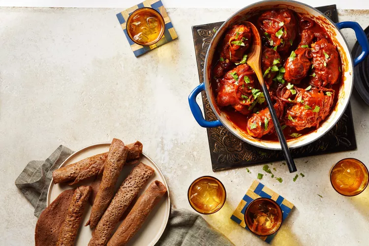

Doro Wat
Back to home
Doro wat is a spicy Ethiopian chicken stew. It is made with chicken, berbere, garlic, ginger, and other spices. It is served with injera, a sourdough flatbread.

Ingredients
- 1 ¾ pounds chicken thighs, skin removed
- 1 ¾ pounds chicken drumsticks, skin removed
- ¼ cup grated fresh ginger
- 2 tablespoons minced garlic
- 4 tablespoons niter kibbeh (spiced clarified butter), divided
- 1 cup thinly sliced red onion
- 1 (15 ounce) can tomato sauce
- 2 tablespoons berbere (Ethiopian spice blend)
- 1 ½ teaspoons fine kosher salt
- 1 teaspoon sweet paprika
- ½ teaspoon cayenne pepper
- ½ teaspoon ground cardamom
- ½ teaspoon ground nutmeg
- 2 tablespoons finely chopped cilantro leaves and stems
- 6 pieces injera (Ethiopian bread)
Directions
-
Pierce chicken thighs and drumsticks in a few spots with a knife; rub with ginger and garlic to coat.
-
Heat 2 tablespoons niter kibbeh in a deep, 12-inch skillet or Dutch oven over medium-high heat. Arrange chicken pieces in a single layer and sear until browned, about 3 minutes per side. Transfer to a plate.
-
Add remaining 2 tablespoons niter kibbeh to the skillet. Add onion; stir-fry over medium-high heat until softened and light brown around the edges, 5 to 8 minutes. Pour in tomato sauce and sprinkle in berbere, salt, paprika, cayenne, cardamom, and nutmeg. Bring to a boil. Reduce heat to low, cover, and simmer, stirring occasionally, until a thin layer of oil separates from the sauce, forming a spice-colored film on its surface, about 20 minutes.
-
Return chicken and any pooled juices to the skillet; coat with sauce. Cook, covered and turning pieces occasionally, until the thickest parts are no longer pink when pierced and meat begins to fall off the bone, 35 to 40 minutes.
-
Sprinkle with cilantro and serve with injera.